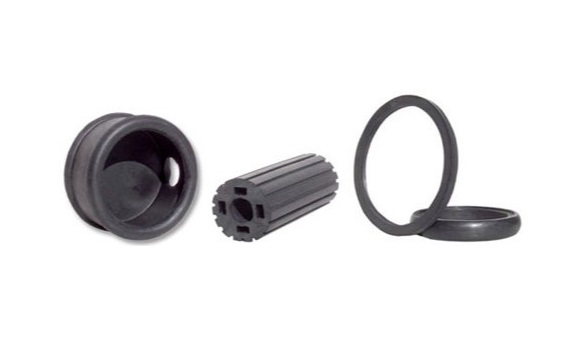

Revamp Your Fleet’s Bus Driver Training Program for Both Your Drivers and Passengers. Whether your fleet is in the process of recovering from recent accidents, or just taking extra steps to prevent future incidents, an investment in safety is a positive move for your organization. Notable for both clarity of content and yielding fast learning, … Continue reading “Bus Driver Training Program | TAPTCO Transit & Paratransit Company”

Mobile Yard Ramp For Sale From Copperloy by JH Industries A Copperloy mobile yard ramp allows not only for the same ground level access as a fixed installation, but also for your team to move from job to job more efficiently. To list, here are some of the advantages of a Copperloy mobile yard ramp. … Continue reading “Mobile Yard Ramp For Sale | Copperloy by JH Industries”

Mens Grey Leather Belt | Status Leather Goods The fashion-minded man knows when it comes to style, it’s not always just black or white. It’s not always about following the rules. Gray adds something more than other neutrals. Try pairing a mens grey leather belt with gray twill pants and an army green collared shirt. … Continue reading “Mens Grey Leather Belt | Mens Gray Leather Belt | Status Leather Goods”

Industrial Vacuum Pump From Becker Pumps Canada | Quality Pneumatic Equipment Becker Pumps Canada produces a broad variety of pneumatic equipment for a broad variety of facility. Products include: Industrial Vacuum Pump Pressure Pumps Combined Pumps Central Air Systems Industrial vacuum pump from Becker Pumps Canada serves a vast range of both industrial applications and … Continue reading “Rotary Vane Pump | Canada Becker Pumps | High Quality”

Backyard Drainage System From AllScapes Ohio | Yard Drainage System | Lawn Drainage System | There’s No Scape We Can’t Handle. Water is key to both growth and life when it comes to a healthy lawn. However, water can also put a healthy lawn at risk. Water damage can allow both roof leaks and mold … Continue reading “Backyard Drainage System | Yard Drainage System | Lawn Drainage System | Allscapes Ohio”

School Bus Driver Training Materials From School Bus Safety Company It’s easy to discount how much trust parents have in school transportation professionals; above all, School Bus Safety Company approaches safety procedures from both multiple angles, and multiple disciplines. Significantly, the organization has brought industrial psychology, media production, and instructional design together to create truly … Continue reading “School Bus Driver Training | School Bus Safety Company”
BLS Certification Near Me From Premier Health & Safety Academy We all know choking and cardiac emergencies, for example, require bystanders to take action, but would you have the knowledge to act quickly and save a life if you were to see someone in danger? For this reason, the American Heart Association’s (AHA) Basic Life … Continue reading “BLS Certification Near Me | Premier Health & Safety Academy”

Aerospace Parts Manufacturing Companies and organizations in search of aerospace parts manufacturing can rely on NMG Aerospace. NMG is a leader in aerospace parts manufacturing in Northeast Ohio and also a notable distributor of defense and aviation products on an international level. Customers of NMG receive unmatched product quality and speedy shipment. NMG is distinguishable … Continue reading “Aerospace Parts Manufacturing | NMG Aerospace”

Status Leather Goods Men’s Grey Leather Belt Are you looking for a durable, stylish men’s grey leather belt to compliment you outfits? Choose Status Leather Goods. Status Leather is a leading designer and manufacturer of men’s grey leather belts and other leather accessories. Choosing the best men’s grey leather belt can be difficult keeping materials, … Continue reading “Men’s Grey Leather Belt”
Lockwire | The Malin Company | We’re the Wire Experts. Whether the task at hand is a major military operation or a normal manufacturing application, loose fasteners can be significant safety issues. For this reason, the Malin Company offers an impressive range of lockwire varieties for a wide range of tasks. Stainless Steel Aerospace Lockwire … Continue reading “Lockwire | Malin Co.”

Divorce Lawyer | Cameron B. Pedro Attorney at Law Though a divorce may be what is best for a couple, no one ever enjoys the process. For this reason, Cameron B. Pedro takes ownership of his role as a divorce lawyer; he recognizes the struggle of his clients and makes every effort to lead as … Continue reading “Divorce Lawyer | Cameron B. Pedro”

Basement Floor Epoxy From Ohio Garage Interiors | The Benefits Have you been saving up to create the ultimate home bar? How about the best game room? You can not only plan the perfect space with basement floor epoxy from Ohio Garage Interiors but also maintain it for years to come. With this in mind, … Continue reading “Concrete Epoxy | Ohio Garage Interiors”
Concrete Epoxy | Ohio Garage Interiors Ease of Both Cleaning and Use Concrete epoxy from Ohio Garage Interiors features a textured and nonporous finish to prevent both moisture buildup and slipping. In addition, the exclusive solution prevents dirt and debris from penetrating a garage floor and causing costly damage. Resistance to Ohio’s Unpredictable Weather Ohio … Continue reading “Concrete Epoxy | Ohio Garage Interiors”
ACLS Certification Ohio From Premier Health & Safety Academy Ideal for healthcare professionals, the American Heart Association’s Advanced Cardiovascular Life Support (ACLS) training course both expands upon Basic Life Support (BLS) protocol and emphasizes impactful cardiopulmonary resuscitation (CPR.) This comprehensive training course addresses effective communication in a cardiac emergency, relevant pharmacology, and recognition and early … Continue reading “ACLS Certification Ohio | Premier Health & Safety Academy”
Lockwire | Malin, Co. | We’re the Wire Experts. Significantly, Malin Company, Inc. has developed an exclusive color coding system for their lock wire canisters. This proprietary system makes for both easy identification and safe and durable lock wire storage. In fact, the company’s lockwire varieties and containers include: Both Stainless Steel Aerospace Lockwire and … Continue reading “Lockwire | Malin Co.”
PALS Classes Near Me From Premier Health & Safety Academy | Pediatric Advanced Life Support Without a doubt, whether you’re a young babysitter or a veteran day care administrator, new to the responsibility or an old pro, a lack of preparation for an emergency can be dangerous, even fatal. For this reason, the American Heart … Continue reading “PALS Classes Near Me | Premier Health and Safety Academy”
Women’s Health Center | Women’s Health Clinic | Women’s Health Services | AxessPointe Community Health Centers Above all, the women’s health professionals from AxessPointe Community Health centers take a multifaceted approach to women’s health services. For example, their physicians realize attention to mental health and consistency of well visits must function alongside maintenance of reproductive … Continue reading “Women’s Health Center | Women’s Health Clinic | Women’s Health Services | AxessPointe Community Health Centers”

SEO Companies | ADVAN | Grow With Us Search engine optimization refers to the process by which businesses or individuals raise their rankings in the search engine results. However, truly impactful search engine optimization must involve getting to know your competition inside and out, and acting upon your newfound information. Some critical questions to consider … Continue reading “SEO Companies | ADVAN”

Tool Box Drawer Liner | Zerust Consumer Products | Protecting Your Precious Metals Zerust’s exclusive tool box drawer liner not only protexts your tools from damage from hard surfaces, but also against rust and corrosion. The product is ideal for shelves, tool boxes, drawers, truck boxes, and storage boxes, for example. Significantly, Zerust’s exclusive tool … Continue reading “Tool Box Drawer Liner | Zerust”

Phenolic Laminates From Monoco, Inc. Whether you stand out on stage, or make breakthroughs in the laboratory, you have to depend on a safe work space. In all, you don’t have the time to worry about tables or floors wearing down and becoming safety issues. For this reason, Monoco, Inc. has served businesses across numerous … Continue reading “Arborite Phenolic Laminate | Monoco, Inc.”
Metallic Epoxy Floor | Metallic Epoxy Floor Coating | Ohio Garage Interiors When you team up with Ohio Garage Interiors for metallic epoxy floor coating installation, you begin the creation of a striking look for your space. Whether you are planning a home improvement project, remodeling a salon, or even starting the newest nightclub on … Continue reading “Epoxy Garage Floor Paint | Ohio Garage Interiors”

Warehouse Dock Ramps From Copperloy by JH Industries | Ramp Up Your Production. Does your facility need a permanent material handling solution? If so, then go with a dock to ground ramp. This option moves freight from grade level to dock height with a fixed installation. However, if your workplace would benefit from a mobile … Continue reading “Warehouse Dock Ramps | Copperloy by JH Industries”

Aerospace Machine Shop NMG Aerospace has been the premier aerospace machine shop not only for Northeast Ohio’s aerospace industry, but also leads the way in the distribution of products for aviation and defense around the world. This Stow, OH business may have Northeast Ohio roots, however it serves customers around the world. NMG Aerospace has … Continue reading “Aerospace Machine Shop | NMG Aerospace”

Conduit Hangers | Progressive Machine Die | Conduit Hardware Conduit Hangers From Progressive Machine Die | Easy Access to Quality Products Progressive Machine Die Conduit Hangers With Both Carriage Bolt and Nut Steel-based Feature zinc-plated finish Available in trade sizes 0 through 9 Conduit Hangers With Formed Thread Secure with screws with no nuts necessary … Continue reading “Conduit Hangers | Progressive Machine Die”

Men’s Reversible Leather Belt | Status Leather Goods Men’s Reversible Leather Belt From Status Leather Goods When it comes to revamping a wardrobe for a new job, a new school year, or just because of the realization you aren’t twelve years old anymore, versatility of pieces is key. For this reason, Status Leather Goods offers … Continue reading “Men’s Reversible Leather Belt | Status Leather Goods”
BLS Classes Near Me | Premier Health and Safety Academy | PHSA Basic Life Support | BLS Classes Near Me From Premier Health and Safety Academy | A Commitment to Education and Service No one expects cardiac emergencies to occur, however a lack of readiness to react impactfully to these events is dangerous. Though it … Continue reading “BLS Classes Near Me | Premier Health and Safety Academy”
Lock Wire | Lockwire | The Malin Company | We’re the Wire Experts. Lock Wire From Malin, Co. | Lockwire The Malin Company produces both lockwire and wire accessories for an impressive range of industries. In fact, Malin carries a lock wire solution for nearly any industry and nearly any task. In addition, the professionals … Continue reading “Lock Wire | Lockwire | Malin Co.”
Arborite Phenolic Laminate | Monoco, Inc. | Insulation Material Fabricators and Distributors Arborite Phenolic Laminate From Monoco, Inc. | Premier Laminate Solutions The Monoco, Inc. team takes great pride in its collaboration with Arborite. The company is Canada’s leading manufacturer of high-pressure laminates. Take a look below at the benefits and features of the Arborite … Continue reading “Arborite Phenolic Laminate | Monoco, Inc.”

Drainage System | Deck Drainage System | Under Deck Drainage Systems | AllScapes Ohio Drainage System from AllScapes Ohio | Deck Drainage System | Under Deck Drainage Systems Water gives your yard its health, its look, and its life. However, it can be one of the most damaging factors to an outdoor space if landowners … Continue reading “Drainage System | Deck Drainage System | Under Deck Drainage Systems | AllScapes Ohio”

Panel Insulation | Jaco Products | Quality Custom Plastic Machining Services Panel Insulation Solutions From Jaco Products | For Any Industry and For Any Application The Jaco Products team fits and fabricates every panel to the customer’s specifications in the most cost-effective way possible. In fact, the exclusive thermal insulators from Jaco Products make for … Continue reading “Panel Insulation |Jaco Products”
School Bus Driver Training Classes | School Bus Safety Company School Bus Driver Training Classes From School Bus Safety Company Overall, the curriculum for school bus driver training classes from School Bus Safety Company takes a comprehensive and multidisciplinary approach. For example, the materials draw from psychology and multimedia development to construct effective and engaging … Continue reading “School Bus Driver Training Classes | the School Bus Safety Company”

Epoxy Garage Floor Paint | Ohio Garage Interiors Epoxy Garage Floor Paint From Ohio Garage Interiors | Withstanding the Elements Both ease of cleaning and resistance to extreme highs and lows in weather characterize epoxy garage floor paint from Ohio Garage Interiors. Without a doubt, any Ohioan knows just how unpredictable the weather in the … Continue reading “Epoxy Garage Floor Paint | Ohio Garage Interiors”
Epoxy Flooring | Ohio Garage Interiors Epoxy Flooring From Ohio Garage Interiors | Bring Your Home to the Next Level. The exclusive Hybrid Polymer Epoxy from Ohio Garage Interiors makes for a surface that withstands the extreme highs and lows of Ohio’s weather. From road salt, to slush to Summer heat, epoxy flooring from Ohio … Continue reading “Epoxy Flooring | Ohio Garage Interiors”
Lawn Care Near Me | Marathon Grounds Care Lawn Care Near Me From Marathon Grounds Care Time Teaming up with experts for lawn care near me saves you valuable time. If you already have a full-time job and people depending on you, taking on a major home improvement project can take too much out of … Continue reading “Lawn Care Near Me | Marathon Grounds Care”
Epoxy Flooring | Ohio Garage Interiors Epoxy Flooring Solutions From Ohio Garage Interiors Whether you’re into restoring classic cars, dedicated to your lawn and garden, or ride your bike everywhere you go, Ohio Garage Interiors has the epoxy flooring materials to give your space both the right look and the right function. In fact, the … Continue reading “Epoxy Flooring | Ohio Garage Interiors”
Mobile Loading Dock | Copperloy by JH Industries | Ramp Up Your Production. Mobile Loading Dock From Copperloy by JH Industries: Saving Space and Maximizing Safety Copperloy’s exclusive mobile loading dock selection includes options that both save valuable space in your facility and maximize safety. Significantly, these docks allow tractor trailers to transport shipments directly. … Continue reading “Mobile Loading Dock”
Mens Designer Leather Belts | Status Leather Goods Mens Designer Leather Belts From Status Leather Goods | Upgrade Your Style. Status Leather Goods is the one stop shop for the fashion minded man. There, he can find pieces from Florsheim Shoe Company and Stacy Adams in addition to Status Leather Goods’ own selection. When you … Continue reading “Mens Designer Leather Belts | Status Leather Goods”

Sell Commercial Equipment | R.W. Martin Company Industrial Machinery Specialists Improve Your Facility; Sell Commercial Equipment With R.W. Martin Company R.W. Martin Company offers great machinery purchase and consignment options to let you and your colleagues move forward with your plans for your facility. Partner up with R.W. Martin Company to sell commercial equipment and … Continue reading “Sell Commercial Equipment | R.W. Martin Company Industrial Machinery Specialists”
Aerospace Components Manufactures Aerospace components manufactures, what it means and what they do? As an Aerospace components manufactures, basically it’s a company that is in one way or another involved with the various aspects of the design, build, test, sell, and maintaining of vehicle, machine, aircraft and parts, missiles, rockets, and spacecraft. Now with that explained, … Continue reading “NMG | Aerospace Components Manufactures | Continuous Improvement”

Dock Plates | Copperloy by JH Industries | Ramp Up Your Production. Dock Plates From Copperloy by JH Industries Loading dock plates connect one area in a material handling space to another. Dock plates lack curbs and are ideal for pallet jacks and dollies. A dock plate is a flat piece of metal with a … Continue reading “Loading Dock Plate | Copperloy by JH Industries”
Concrete Repair and Restoration | Ohio Garage Interiors Upgrade Your Space | Concrete Repair and Restoration From Ohio Garage Interiors Ohio Garage Interiors has the capabilities to transform damaged and eroded surfaces into stunning creations. Exclusive garage floor epoxy coatings from Ohio Garage Interiors protect finished products from eroding factors like road salt, for example. … Continue reading “Concrete Repair and Restoration | Ohio Garage Interiors”
Commercial Laundry Equipment Repair | The R.W. Martin Company Industrial Machinery Specialists Investing in Your Facility: Commercial Laundry Equipment Repair From the R.W. Martin Company Without a doubt, for your facility to produce the revenue you need, your space must operate at maximum efficiency. This is impossible if your commercial laundry equipment is not working … Continue reading “Industrial Laundry Parts | R.W. Martin Company Industrial Machinery Specialists”
Industrial Laundry Parts | R.W. Martin Company: Industrial Machinery Specialists If You Decide Not to Invest in Your Facility Now, Then You’ll Regret it Later: Industrial Laundry Parts From R.W. Martin Company Without a doubt, industrial laundry parts are everywhere; from brick-and mortar distributors, to online storefronts, such pieces are easy to obtain. However, industrial … Continue reading “Industrial Laundry Parts | R.W. Martin Company Industrial Machinery Specialists”

Mens Red Leather Belt | Red Leather Belt for Men | Status Leather Goods Mens Red Leather Belt From Status Leather Goods: The Ultimate Statement Piece A mens red leather belt from Status Leather Goods is the ultimate statement piece for the fashion-minded man of today. For example, you could try one with a light … Continue reading “Mens Red Leather Belt | Status Leather Goods”

Industrial Vacuum Pumps | Becker Pumps in Mexico distributed exclusively by BRB del Norte SA de CV Industrial Vacuum Pumps From Becker Pumps in Mexico distributed exclusively by BRB del Norte SA de CV Becker Pumps in Mexico distributed exclusively by BRB del Norte SA de CV offers industrial vacuum pumps that are both compact … Continue reading “Industrial Vacuum Pumps | Becker Pumps | Mexico | BRB del Norte SA de CV”

Rotary Vane Pumps | Rotary Vane Pump | Becker Pumps Corporation Rotary Vane Pumps and Rotary Vane Pump From Becker Pumps Corporation Becker Pumps Corporation produces an impressive range of rotary vane pumps for a wide range of industries and applications. The rotary vane pump selection from Becker serves: Pick and place Vacuum infusion of … Continue reading “Becker Oil | Vacuum Pump Oils | Oil For Vacuum Pump | Becker Pumps USA”
Bus Driver Training Course | TAPTCO | Transit & Paratransit Company Bus Driver Training Course From TAPTCO Transit & Paratransit Company: An Effective and Multidisciplinary Approach to Safety Training Transit Operator Development Course Paratransit Operator Development Course The Safety Leadership Course Trainer Certification Process Bus Garage Safety Toolkit and OSHA Compliance Conflict and Aggression Management … Continue reading “Bus Driver Training Course | TAPTCO Transit & Paratransit Company”
Lockwire | Lock Wire | Malin Co. | We’re the Wire Experts. Lock Wire and Lockwire from Malin Company, Inc. Malin Company, Inc. has developed an exclusive color coding system of lock wire canisters. These proprietary canisters make for both easy identification and safe and durable lock wire storage. The company’s lockwire varieties include: Copper … Continue reading “Lock Wire | Lockwire | Malin Co.”
Bluff Manufacturing | Copperloy by JH Industries | Ramp Up Your Production. The Premier Alternative to Bluff Manufacturing: Why Choose Copperloy by JH Industries? First and foremost, a single-acting hydraulic system is the main component of the Copperloy advantage. In fact, competing ramps such as those from Bluff Manufacturing operate with less efficient hydraulic systems … Continue reading “Ramp for Loading Dock | Copperloy by JH Industries”
Drive Up Ramp | Copperloy by JH Industries | Ramp Up Your Production. Drive Up Ramp From Copperloy by JH Industries: Maximizing Safety, Space, and Profitability in the Workplace A Copperloy drive up ramp allows trucks, forklifts and other vehicles access to higher areas in a work facility. Copperloy by JH Industries offers two drive … Continue reading “Drive Up Ramps | Copperloy | Dock Equipment | Safe & Reliable”
Busch Pump | Busch Pumps | Becker Pumps Corporation About Becker Pumps Corporation: Investing in Your Facility Above all, Becker Pumps Corporation puts the focus on constant enhancement of air moving technology. The company offers exclusive customization services in addition to technical support and an impressive replacement part selection. For this reason, Becker’s industrial vacuum … Continue reading “Busch Pumps | Becker Pumps Corporation”
Loading Dock Ramps | Copperloy by JH Industries | Ramp up Your Production. Copperloy’s Loading Dock Ramps: Maximizing Space, Safety, and Productivity Loading dock ramps from Copperloy by JH Industries feature an exclusive single cylinder structure. Significantly, this unique design uses significantly less pressure than competitors’ models. Most importantly, Copperloy’s loading dock ramps provide easier … Continue reading “Loading Dock Ramps | Copperloy by JH Industries”
What Exactly Is Stainless Steel Safety Wire? Stainless Steel safety wire is also known as “locking wire” is a form of a secure locking device which prevents fasteners from loosening or falling from due to vibrations and other forces. The wire itself applies tension and holds objects in place when twisted around itself. Then it’s … Continue reading “Stainless Steel Safety Wire | Malin Company | Safety Lock Wire”
Stainless Steel Wire | Malin Co. About Malin Co.: Making Impacts Malin Co. is a premier manufacturer of stainless steel wire for numerous industrial applications. With over 130 years of innovation, the company has evolved to become a leading manufacturer of stainless steel wire. As a result, the Cleveland, Ohio organization has one of the … Continue reading “Stainless Steel Wire | Malin Company”

Industrial Vacuum Pump | Becker Pumps of Canada | Becker Pumps Corporation About Becker Pumps of Canada: Quality Central Air System Equipment to Boost Efficiency Across Industries Becker Pumps of Canada is a leading manufacturer of industrial vacuum pumps, oil for vacuum pump, regenerative blowers, and compressors. Above all, the company has provided quality products … Continue reading “Industrial Vacuum Pump”
Vacuum Pump Part | Becker Pumps In Mexico Distributed Exclusively By Brb del Norte sa de Cv About Becker Pumps In Mexico Distributed Exclusively By Brb Del Norte Sa de CV Becker Pumps in Mexico distributed exclusively by BRB del Norte SA de CV is a leading manufacturer of industrial vacuum pumps for medical, laboratory, … Continue reading “Vacuum Pump Part | Becker Pumps | Mexico | BRB del Norte SA de CV”
Mens Blue Leather Belt | Status Leather Goods Status Leather Goods: Mens Blue Leather Belt Selection A mens blue leather belt from Status Leather Goods can be the ultimate statement piece. Pair one with gray twill pants and a white T shirt for a classic cool look. You could also match one with khakis and … Continue reading “Adjustable Leather Belts for Men | Status Leather Goods”
Concrete Restoration Companies | Ohio Garage Interiors About Ohio Garage Interiors | A Leader Among Northeast Ohio Concrete Restoration Companies Father and son Chad Gleske and Scott Gleske lead Ohio Garage Interiors to organize and enhance the aesthetic and function of customers’ homes. Above all, the company provides flooring, storage systems, and organizational layouts to … Continue reading “Concrete Restoration Companies | Ohio Garage Interiors”

Sealing Criminal Records In Ohio | Second Chance | Davis Law Group Searching for Sealing Criminal Records In Ohio? Davis Law Group, Attorneys at Law is here to help you gain your second chance. Do you have an arrest, charge, or convicted of a crime? If you answered yes, then you know that your past … Continue reading “Sealing Criminal Records In Ohio | Davis Law Group | Attorneys At Law”
Flooring Installation Companies | Flooring Installation Companies Near Me | Floorscapes Installation Specialists About Floorscapes Installation Specialists: A Dedication to Quality and Community Above all, Floorscapes Installation Specialists is notable for its dedicated team of contractors who commit themselves to providing quality home improvement. The Stow, Ohio-based company offers customized flooring solutions for the Northeast … Continue reading “Flooring Installation Companies | Flooring Installation Companies Near Me | Floorscapes”
Glastherm | Monoco Inc. | Glastherm Distributor About Monoco Inc.: A Dependable Glastherm Distributor Since 1965, Monoco, Inc. has provided premier electrical and thermal insulation materials for an impressive range of fields and industrial applications. A reliable Glastherm distributor, the company has led the way in both the distribution and the fabrication of industrial laminates … Continue reading “Glastherm”

Big Mens Belts up To 66” | Status Leather Goods | Quality Men’s Leather Accessories Big Mens Belts up to 66” | Stop Limiting Your Style. Just as no two personalities, or senses of fashion are exactly alike, no two guys have exactly the same build. However, many major fashion retailers seem to forget this … Continue reading “Adjustable Leather Belts for Men | Status Leather Goods”

Dock Boards | Copperloy by JH Industries | Ramp Up Your Production. About Copperloy by JH Industries: Leading Material Handling Equipment Manufacturers For more than five decades, Copperloy by JH Industries has been a premier source for quality industrial equipment. In fact, Copperloy by JH Industries leads the way among manufacturers of material handling and … Continue reading “Dock Boards | Copperloy by JH Industries”
What Is SEO? What is SEO? In today’s world of technology, it amazes me how many people actually do not know or understand exactly what is SEO and what it’s used for. SEO is an acronym that stands for Search Engine Optimization. Wikipedia defines SEO as a process that will increase the quality and quantity … Continue reading “What is SEO | ADVAN Design | Ohio’s Go-To SEO Company”
White Collar Crime | Hiltner Law | Ohio Criminal Defense Attorney About Max Hiltner: A Committed Trial Lawyer Above all, Maxwell Hiltner started his legal practice to respond to a lack of criminal defense resources. Hiltner Law puts the full focus on the client. From white collar crime, to drug charges, to murder, Max Hiltner … Continue reading “White Collar Crime | Hiltner Law | Max Hiltner”
Bus Driver Training Program | TAPTCO | Transit & Paratransit Company About TAPTCO Transit & Paratransit Company: Detailed and Engaging Bus Driver Training Program Materials For more than two decades, TAPTCO Transit & Paratransit Company has formatted top quality bus driver training program materials. Above all, TAPTCO Transit & Paratransit prioritizes safety. The Hudson, Ohio-based … Continue reading “Bus Driver Training Program | TAPTCO Transit & Paratransit Company”
Lock Wire | Lockwire | Malin Co. About Malin Co.: Leaders in the Wire Manufacturing Industry Above all, Malin Co. is a premier manufacturer of stainless steel wire, lockwire, and lock wire for numerous industrial applications. With over 130 years of innovation, the company has evolved to become a top producer of lock wire and … Continue reading “Lock Wire | Lockwire | Malin Co.”
School Bus Driver Training | the School Bus Safety Company About the School Bus Safety Company For more than two decades, the School Bus Safety Company has produced video and print materials for school bus driver training. The company’s exclusive materials allow for education plan customization as well as encourage collaboration between drivers and students … Continue reading “School Bus Driver Training | the School Bus Safety Company”
Adjustable Leather Belts for Men | Status Leather Goods Adjustable Leather Belts for Men From Status Leather Goods: A Custom Fit For the Right Impression The stylish man knows if his clothes don’t fit, his outfit won’t make the right impact. For this reason, fit is one of the most critical components of any article … Continue reading “Adjustable Leather Belts for Men | Status Leather Goods”
Injection Molding Companies | Qualiform Custom Rubber Molding About Qualiform Custom Rubber Molding: A Leader Among Injection Molding Companies For more than four decades, Qualiform Custom Rubber Molding has led the way as other injection molding companies have emerged. Above all, Qualiform prioritizes competitive prices, short runs, and fast turnarounds. Businesses across the country rely … Continue reading “Injection Molding Companies | Qualiform Custom Rubber Molding”
Becker Oil | Vacuum Pump Oils | Oil For Vacuum Pump | Becker Pumps USA Maximizing Efficiency and Durability: Becker Oil | Vacuum Pump Oils | Oil For Vacuum Pump No matter the industry and no matter the task, durability is everything. Becker oil is especially notable for its resistance to the wear characteristic of … Continue reading “Becker Oil | Vacuum Pump Oils | Oil For Vacuum Pump | Becker Pumps USA”
Applications Of Rubber Gaskets Rubber gaskets are applied in a wide variety of applications with a diverse range within the industrial world of today. Gaskets provide a seal between two objects that do not nest together tightly. This will create a seal preventing any leakage of moisture, air, gas, and liquids. This helps in maintaining … Continue reading “Applications of Rubber Gaskets | Rubber Seal Products | Qualiform, LLC”
SEO Company | ADVAN Design | Premier Search Engine Optimization Services For the Northeast Ohio Community About Advan Design: Leading Our Industry and Serving Our Community For nearly twenty years, the team at ADVAN Design has evolved alongside the internet to develop premier digital marketing plans for the growth of Northeast Ohio’s businesses. Above all, … Continue reading “SEO Company | ADVAN Design”

Mens Braided Leather Belt | Status Leather Goods About Status Leather Goods: Supplying Your Rotation of Men’s Leather Accessories Status Leather Goods supplies classic cool leather accessories for the fashion-minded man of today. The brand offers an impressive and diverse range of bags, belts, and wallets ideal for building a solid rotation of accessories. Check … Continue reading “Mens Braided Leather Belt | Status Leather Goods”
Concrete Restoration Contractors | Ohio Garage Interiors About Ohio Garage Interiors: Transforming the Homes of Northeast Ohio Father and son Chad Gleske and Scott Gleske lead Ohio Garage Interiors to organize and enhance the images of garages of Northeast Ohio’s homes. Above all, the company provides flooring, storage systems, and organizational layouts to help their … Continue reading “Concrete Restoration Contractors | Ohio Garage Interiors”
Plastic Fabrication Company | Plastic Fabricator | Plastic Fabrication | Jaco Products About Jaco Products: Quality Plastic Fabrication Services Jaco Products has more than eight decades of expertise as a plastic fabrication company. Chiefly, plastic machining, stamping, and injection molding, and more make up the company’s diverse range of offerings. Above all, Jaco Products takes … Continue reading “Plastic Fabrication Company | Plastic Fabricator | Plastic Fabrication | Jaco Products”
Ramp For Loading Dock | Copperloy by JH Industries About Copperloy by JH Industries: Leaders of an Industry Copperloy by JH Industries serves clients by providing the highest quality material handling and loading dock equipment. Their Twinsburg, Ohio facility uses the most current computer numerical control (CNC) and robotic technology to produce ramp for loading … Continue reading “Ramp for Loading Dock | Copperloy by JH Industries”
Flooring Companies | Floorscapes Installation Specialists Inc. About Floorscapes Installation Specialists Inc.: Dedicated Home Improvement Contractors for the Northeast Ohio Community Floorscapes Installation Specialists Inc. has a dedicated team of contractors who commit themselves to providing not only quality flooring, but also a distinct dedication to clients. The Stow, Ohio-based company offers customized flooring solutions … Continue reading “Flooring Companies | Floorscapes Installation Specialists Inc.”
BLS Certification Cleveland Ohio | BLS Certification Near Me | ACLS BLS Certification If you are searching for BLS certification near me or BLS certification Cleveland Ohio, make sure to check out Donald Martens & sons education calendar. BLS is abbreviated for Basic Life Support. Donald Martens & Sons Ambulance Service provides instructor-led courses. These … Continue reading “BLS Certification Near Me | Martens Ambulance | Cleveland Ohio”
Tenant Lawyer | Davis Law Group: Putting the Focus on Family Throughout the Legal Process About Davis Law Group: A Crucial Resource for the Northeast Ohio Region With nearly four decades of advocacy and dedication behind them, Davis Law LLC has emerged as a leading resource for a tenant lawyer in Northeast Ohio. Above all, … Continue reading “Tenant Lawyer | Davis Law Group”
Loading Dock Plate | Copperloy by JH Industries About Copperloy by JH Industries: Leading the Material Handling and Loading Dock Equipment Fields Copperloy by JH Industries stands out among the rest when it comes to manufacturing durable equipment for numerous material handling purposes. The Twinsburg, Ohio headquarters is a one-stop source for premier design and … Continue reading “Loading Dock Plate | Copperloy by JH Industries”
Advertising Agencies Cleveland | Advan Design About Advan Design: Constant Forward Motion in Digital Marketing and Design For almost twenty years, Advan Design has stood out among other advertising agencies Cleveland. This distinction is a result of dedication to client growth, consistent communication, and mastery of the best digital and traditional marketing methods. Above all, … Continue reading “Advertising Agencies Cleveland | Advan Design”
Stainless Steel Wire | Malin Co. About Malin Co.: Making Impacts Malin Co. is a premier manufacturer of stainless steel wire for numerous industrial applications. With over 130 years of innovation, the company has evolved to become a leading manufacturer of stainless steel wire. As a result, the Cleveland, Ohio organization has one of the … Continue reading “Stainless Steel Wire | Malin Company”

Hardscape Companies Near Me | Hardscape Contractors | Hardscape Landscaping | Allscapes Ohio About Allscapes Ohio: Premier Hardscape Contractors and Hardscape Landscaping Services Trevor Arnold started AllScapes Ohio to provide quality lawn maintenance services for Northeast Ohio’s homes and businesses at an affordable price. Particularly, the company serves businesses and residencies in the counties of … Continue reading “Hardscape Contractors Near Me | Allscapes Ohio | Outdoor Living”
Genuine Leather Wide Belts for Men | Status Leather Goods About Status Leather Goods: Upgrade Your Wardrobe. Status Leather Goods creates quality leather accessories for the stylish man of today. The brand offers an impressive variety of wallets, belts, and bags. The selection includes belts for any occasion and any style. For example, the company’s … Continue reading “Genuine Leather Wide Belts for Men | Status Leather Goods”

Cargo Ramps | Copperloy by JH Industries About Copperloy by JH Industries: More Than Fifty Years of Industry Leadership For more than five decades, Copperloy has produced quality loading dock and material handling equipment. Their Twinsburg, Ohio facility supplies American-made edge of dock levelers, portable loading docks, and cargo ramps, for instance. Chiefly, Copperloy employs … Continue reading “Cargo Ramps | Copperloy by JH Industries”

Why Hire A Real Estate Lawyer Residential Property What is the role of a Real Estate Lawyer? When it comes to investing one’s capital in any purchase it is always wise to seek legal advice. When purchasing a home, this is the largest investment a person typically makes in their lifetime. So why wouldn’t you … Continue reading “Real Estate Lawyer | Davis Law Group | Protecting Your Investment”
White Collar Crime | Hiltner Law White Collar Crime: Quality Legal Help in Northeast Ohio, For Northeast Ohio From identity theft, to embezzlement, to various types of fraud, Hiltner Law has the expertise to guide you through the legal process. White collar crime can take many forms. The complexity of this process can often combine … Continue reading “White Collar Crime | Hiltner Law”
Rubber Gaskets Fit & Function So what exactly are rubber gaskets and its function? Gaskets are a fundamental part of our everyday life which typically are overlooked and underappreciated. Being used in just about all household appliances, vehicles, and other types of machines. Think about it, what is one appliance that everyone uses day in … Continue reading “Rubber Gaskets | Rubber Seal Products | Qualiform, LLC”
Hardscape Contractors Near Me Are you searching for top-rated Hardscape Contractors in the Hudson & Stow area? Allscapes offers the services you need. From residential and commercial services to landscapes and hardscapes. A team that delivers creative designs that are sure to elevate your property. Allscapes hardscape contractors expertise includes the following areas: Concrete And Paver … Continue reading “Hardscape Contractors Near Me | Allscapes Ohio | Outdoor Living”

Wine Country | Wine Country Ohio | Wine Country in Ohio | Wine Country Tours | M Cellars About M Cellars: World Class Winemaking Right Here in Northeast Ohio Matt and Tara Meineke commit themselves to provide an amazing experience for the people of Ohio and beyond. Above all, M Cellars produces authentic, … Continue reading “Wine Country | Wine Country Ohio | Wine Country in Ohio | Wine Country Tours | M Cellars”
Mens Thick Leather Belt | Status Leather Goods | Check Out This Versatile Collection of Leather Accessories. About Status Leather Goods: Classic Cool Leather Accessories For the Modern Man Status Leather Goods is a men’s accessories brand that carries a wide variety of belts, wallets, and bags for the stylish man of today. … Continue reading “Mens Thick Leather Belt | Status Leather Goods”

Aluminum Loading Ramps | Copperloy by JH Industries About Copperloy by JH Industries: Leaders in the Material Handling and Loading Dock Equipment Industries This Twinsburg, Ohio-based company produces durable products such as aluminum loading ramps for businesses across the country and across countless fields. As a result, Copperloy has stood out for over … Continue reading “Aluminum Loading Ramps | Copperloy”
Bus Driver Training – Proper Training Is Fundamental When searching for bus driver training courses, be sure to put School Bus Safety Company at the top of your list. When considering obtaining a commercial driver’s license, proper training is fundamentally when it comes to keeping kids safe. SBSC offers the most comprehensive bus driver training … Continue reading “Bus Driver Training | Keeping Children Safe | School Bus Safety Company”
Summit County Probate | Davis Law Group LLC About Davis Law Group LLC: A Leader in Their Field and in Their Community Father and son Kevin G. Davis and Kevin G. Davis II lead Davis Law Group and lead their field as premier Summit County probate lawyers. Above all else, Davis Law Group … Continue reading “Summit County Probate | Davis Law Group”

Dock Levelers | Copperloy by JH Industries About Copperloy by JH Industries Copperloy by JH Industries has dedicated more than half a century to producing material handling and loading dock equipment of the highest quality. The company has garnered credibility across the nation and across industries. Copperloy has provided durable products for numerous … Continue reading “Dock Levelers | Copperloy”
Rubber Grommet Manufacturer | Qualiform Custom Rubber Molding About Qualiform Custom Rubber Molding: Superior Customization Capabilities Qualiform Custom Rubber Molding has over four decades of leadership in the custom rubber molding and rubber product manufacturing industries. Numerous businesses have relied on Qualiform to produce quality custom rubber grommets, rubber gaskets and seals, suspension … Continue reading “Rubber Grommet Manufacturer | Qualiform Custom Rubber Molding”
Mens Grey Leather Belt | Mens Gray Leather Belt | Status Leather Goods About Status Leather Goods: Classic Accessories for the Modern Man’s Wardrobe Status Leather Goods is the fashion-minded man’s go-to source for quality leather accessories. This Oakwood, Ohio-based men’s fashion brand provides timeless accessories for the modern man’s wardrobe. The pieces … Continue reading “Mens Grey Leather Belt | Mens Gray Leather Belt | Status Leather Goods”
Dock Plate | Copperloy by JH Industries About Copperloy by JH Industries Copperloy by JH Industries is a premier manufacturer of material handling and loading dock equipment. The Twinsburg, Ohio facility produces dock plate, wheel chocks, edge of dock levelers, heavy duty yard ramps, and so much more. All departments collaborate with each … Continue reading “Dock Plate | Copperloy by JH Industries”
Dock Boards Solutions For Difficult Challenges Do you know Copperloy dock boards can be customized matching any of your specifications, offering solutions for any difficult challenges? With the productivity of your warehouse loading operations solely relying on the quality of the equipment involved, why would you settle for anything less than the best? Does your … Continue reading “Dock Boards | High Strength | Durable | Portable | Copperloy”
Semi Truck Ramp | Tractor Trailer Ramps | Copperloy by JH Industries About Copperloy by JH Industries Copperloy serves as a leader in the material handling and loading dock equipment industries. The company produces quality specialty ramps, portable loading docks, edge of dock levelers, tractor trailer ramps, and so much more. Based in Twinsburg, Ohio, … Continue reading “Semi Truck Ramp | Tractor Trailer Ramps | Copperloy by JH Industries”
Aluminum Ramps | Copperloy/JH Industries About Copperloy/JH Industries: A Commitment to Quality Businesses in Northeast Ohio and beyond count on Copperloy for quality aluminum ramps, lifts, edge of dock boards, and more. For this reason, in the material handling and loading dock equipment industries Copperloy stands out among the rest. Copperloy distinguishes itself through … Continue reading “Aluminum Ramps | Copperloy”
Rubber Grommets | Benefits | Applications Rubber Grommets are used in a myriad of industries. Typically used to cover rough sharp corners or edges of metal in order for other materials to pass through undamaged. Also known as eyelets, there are many common functions of rubber grommets. Grommets commonly being used in everyday places, such … Continue reading “Rubber Grommets | Qualiform, LLC | Custom Rubber Molding”
Divorce Lawyer Medina | Cameron B. Pedro | Cameron B. Pedro Attorney at Law About Cameron B. Pedro: An Empathetic, Dedicated, and Trustworthy Divorce Lawyer Medina Cameron B. Pedro has provided premier legal services across multiple disciplines. He is a leader of his profession in the region as a premier resource for divorce … Continue reading “Divorce Lawyer Medina | Cameron B. Pedro”
Big Mens Leather Belts | Status Leather Goods About Status Leather Goods Status Leather Goods creates versatile leather accessories for the stylish man. Look to Status Leather Goods for premium leather belts, wallets, and bags. They carry a wide variety of accessories for a wide variety of occasions. For example, their big mens … Continue reading “Big Mens Leather Belts | Status Leather Goods”
Divorce Lawyer Brunswick | Cameron B. Pedro Attorney at Law About Cameron B. Pedro Attorney at Law: Fighting for Fair Results Cameron B. Pedro has provided expert legal counsel for civil, criminal, and traffic matters. First and foremost, he leads the way as a premier resource for divorce lawyer Brunswick; family is the top … Continue reading “Divorce Lawyer Brunswick | Cameron B. Pedro”
Copperloy/JH Industries | Used Yard Ramps About Copperloy/JH Industries: Leading the Material Handling and Loading Dock Equipment Fields Businesses expect safety, reliability, and efficiency from products when investing in material handling equipment. Copperloy leads the loading dock equipment industry and provides cost-effective material handling solutions. Their Twinsburg, Ohio facility uses the latest in … Continue reading “Used Yard Ramps | Copperloy/JH Industries”
ADVAN SEO Services | E-Commerce SEO Getting your online store more organic traffic can make a huge difference in your sales. Bringing in more sales is a great way to build your e-commerce empire. You can’t do any of that without powerful e-commerce SEO for your online store. ADVAN’s SEO services can help your e-commerce … Continue reading “ADVAN SEO Services | E-Commerce SEO”
Floorscapes Inc. | Flooring Companies Stow, Ohio When searching for flooring companies Stow, Ohio, look no further than Floorscapes Inc. These specialists go above and beyond when it comes to installing flooring in your home. With ten years of experience of installing flooring, you can count on the job being done correctly the first time … Continue reading “Flooring Companies | Stow, Ohio | Floorscapes Inc. | Installing Specialist”
Industrial Vacuum Pumps | Becker Air System Machinery | Becker Pumps USA About Becker Pumps USA: An Industry Leader Becker Pumps USA is a leading manufacturer of industrial vacuum pumps, regenerative blowers, and other pneumatic equipment. Since 1885, Becker Pumps has led innovation in central air system equipment. The company’s industrial vacuum pumps and other products … Continue reading “Industrial Vacuum Pumps | Becker Air System Machinery | Becker Pumps USA”
How Do I Know If I Need Concrete Restoration? Is your garage floor in need of concrete restoration? After all, garages are one of the hardest working areas in homes. You may wonder what has caused your garage floor to develop cracks, become uneven, or just downright an eyesore over the course of years. Neglected garage … Continue reading “Concrete Restoration | Garage Flooring | Ohio Garage Interiors”

Status Leather Goods | Mens White Leather Belts About Status Leather Goods: Classic Leather Accessories for the Modern Man Status Leather Goods creates versatile leather accessories for the stylish man. Look to Status Leather Goods for premium leather belts, wallets, and bags. They carry a wide variety of accessories for a wide variety of occasions. … Continue reading “Status Leather Goods | Mens White Leather Belts”
Best Garage Storage Shelves | Overhead Garage Storage If you’re searching for the best garage storage shelves solutions you have come to the right place. With Ohio Garage Interiors overhead garage storage makes your garage more functional. Think about it, you all have this valuable space above in your garage why not put it to use. … Continue reading “”

Becker USA | Supervane Vanes for Becker About Becker Pumps: Creating Solutions for a Wide Range of Industrial Applications Becker Pumps is a leading manufacturer of industrial vacuum pumps, compressors, and regenerative blowers. The company has innovated the pneumatic equipment industry since 1885. Becker’s North America headquarters serves the United States of America, Canada, … Continue reading “Becker USA | Supervane Vanes for Becker”

Hiltner Law, ltd. | Federal Criminal Defense Lawyer About Hiltner Law: A Federal Criminal Defense Lawyer for Ohio and West Virginia Hiltner Law puts its focus exclusively on criminal defense. Max Hiltner founded Hiltner Law in 2014 to remedy the lack of criminal defense firms. Hiltner drew from his law school background of constitutional … Continue reading “Hiltner Law | Federal Criminal Defense Lawyer”

Copperloy/JH Industries | Steel Yard Ramps | Steel Trailer Ramps About Copperloy/JH Industries: Quality Steel Yard Ramps and Steel Trailer Ramps for Any Industry Copperloy is a premier resource for customized design of material handling products. Count on Copperloy to deliver quality steel yard ramps, steel trailer ramps and more. The company serves an impressive … Continue reading “Copperloy | Steel Yard Ramps | Steel Trailer Ramps”
Copperloy/JH Industries | Heavy Duty Ramps | Loading Ramps Heavy Duty | Heavy Duty Truck Service Ramps About Copperloy/JH Industries: Leading the Material Handling Equipment Industry Copperloy is a leader in the material handling equipment industry. Headquartered in Twinsburg, Ohio, Copperloy has become a premier source of heavy duty truck service ramps and other heavy … Continue reading “Copperloy/JH Industries | Heavy Duty Ramps | Loading Ramps Heavy Duty | Heavy Duty Truck Service Ramps “

Qualiform, LLC. Custom Rubber Molding. A DOWCO, LLC Company | Rubber to Metal Molding About Qualiform: Leading the Rubber to Metal Molding Industry With over four decades of rubber molding industry leadership, Qualiform has become one of the most reliable sources for rubber to metal molding solutions. This Wadsworth, Ohio-based company has served the automotive, … Continue reading “Qualiform | Rubber to Metal Molding”
Qualiform, LLC. Custom Rubber Molding. A DOWCO LLC Company | Rubber to Metal Bonding Companies About Qualiform: Constant Innovation In the Rubber Molding Industry When it comes to delivering quality and cost-effectiveness, Qualiform leads the way among rubber to metal bonding companies. Their dedicated professionals have what it takes to provide quality design as well … Continue reading “Qualiform, LLC. | Rubber to Metal Bonding Companies”
EMT Basic Training The First Step Of The EMT- Paramedic Field Donald Martens and Sons is now offering EMT basic training. So what exactly does EMT basic training implicate? EMT I- Basic certification is the beginning of career towards becoming a certified EMT- Paramedic. Most EMT Paramedic programs are 2-year associates degree. EMT- Basic certification … Continue reading “EMT Basic Training | Martens Ambulance | Cleveland Ohio”
Yard Ramp Safety | Truck Loading Safety | Copperloy/JH Industries About Copperloy/ JH Industries Copperloy/JH Industries is one of the nation’s leading manufacturers of loading dock products. The Twinsburg-based company provides quality material handling equipment all over the country. They take advantage of the latest in manufacturing technology and make safety a priority. This is … Continue reading “Yard Ramp Safety | Truck Loading Safety | Copperloy/JH Industries”
Lab Table Top | Monoco, Inc. | Jaco Products About Monoco, Inc.: Providing Durability Across Industries Monoco, Inc. is a premier manufacturer of electrical insulation and thermal insulation materials. Their products have characteristic resistance to heat, mechanical wear, chemical wear, high temperature and fire. The company’s Middlefield, OH facility functions as a single source … Continue reading “Lab Table Top | Monoco, Inc.”
M Cellars | Wine Tasting | Wine Tasting Near Me | Wine Tasting Tours | Wine Tasting Room About M Cellars: World-Class Quality at Home Matt and Tara Meineke take pride in the dedication and attention to detail that make M Cellars Northeast Ohio’s destination for quality wine. The winery is notable for its selection … Continue reading “M Cellars | Wine Tasting | Wine Tasting Near Me | Wine Tasting Tours | Wine Tasting Room”
Hydraulic Ramp | Why Choose Copperloy? If your industries hydraulic ramp is unreliable and unsafe, it can be a significant problem for a loading dock operation. When your employees are going to be loading/unloading all day, the ramps also need to be able to handle the workload. If not there’s a big safety issue at … Continue reading “Hydraulic Ramp | Benefits & Features | Copperloy”
Floorscapes Inc. | Floor Installers Stow, Ohio If searching for floor installers Stow, Ohio, look no further than Floorscapes Inc. With ten years of experience designing and installing flooring, they certainly can enhance your home interior. Their specialists will take the time and offer an in-depth analysis of each type of flooring. They will advise … Continue reading “Floor Installers | Stow, Ohio | Floorscapes Inc. | Specialists”
JH Industries Inc. | Portable Loading Docks | Copperloy About Copperloy/JH Industries: Quality Results For Efficient Workplaces Copperloy/JH Industries is one of the nation’s leading manufacturers of loading dock products. This Northeast Ohio manufacturer has its roots in Twinsburg but its reach across the country. They produce quality products through the latest in computer numerical … Continue reading “JH Industries Inc. | Portable Loading Docks | Copperloy”

Becker Air System Machinery | Rotary Vane Pumps From medicine to manufacturing and printing to packaging, Becker offers a wide range of rotary vane pumps across numerous industries. Your situation might call for vacuum, compression, or even both. Becker’s selection has the solutions you have been looking for. Rotary vane pumps are essential in effective … Continue reading “Rotary Vane Pumps”
Vane Pumps Now Available With Becker Pumps Mexico Vane Pumps now distributed exclusively by BRB del Norte SA de CV – Becker Pumps in Mexico. For over one hundred years Becker has been maintaining a reputation of high-quality, reliable machinery and trustworthy customer service. Since 1885, Becker Pumps has been designing and manufacturing advanced air … Continue reading “Vane Pumps | Becker Pumps | Mexico | BRB del Norte SA de CV”
Rotary Vane Pump | High Quality | Flexible Pump A Becker Rotary Vane Pump now distributed by Becker Pumps Canada. Offered in a number of basic designs, as well as being customizable to fit your exact specifications, the rotary vane pump is notable for its high-quality yet flexibility. No longer settle or compromise when it … Continue reading “Rotary Vane Pump | Canada Becker Pumps | High Quality”
Becker Air System Machinery | Industrial Vacuum Pumps Becker Pumps in Mexico distributed exclusively by BRB del Norte SA de CV is a leading manufacturer of industrial vacuum pumps for medical, laboratory, and other industrial applications. Medicine, research, and manufacturing call for precision and reliability, and Becker delivers with user-friendly products. The company puts … Continue reading “Industrial Vacuum Pumps”

ADVAN Design | Cleveland SEO Digital marketing is now a crucial aspect for any growing business. Most businesses cannot expect to survive in the modern economy without the implementation of digital marketing strategy. ADVAN Design is a Cleveland SEO company offering digital marketing services to Northeast Ohio businesses. We offer immense experience in web design, … Continue reading “Cleveland SEO”

Overhead Garage Storage The Best Storage Solutions Overhead Garage Storage is the ideal storage solutions to make your garage space more functional. Think about it, you all have this valuable space above in your garage why not put it to use. It’s time to take back your garage. Overhead storage systems are perfect for keeping … Continue reading “Overhead Garage Storage | Ideal Storage Solutions”
Becker Pumps | Replacement Vane | Becker Oil-Less Rotary Vane Pump If you are searching for a replacement vane for your Becker Pump product don’t settle for counterfeit vanes. Maintaining maximum vacuum and pressure levels is a must for the prolonged life of your pump. Becker wants you to be aware of counterfeit vanes that … Continue reading “Becker | Genuine Replacement Vanes | Carbon Vacuum Pump Vanes”

Manufacturing Metal Truck Ramps That Simplify Loading Tasks Copperloy has the metal truck ramps that you need to simplify any possible loading task. Sixty years of experience creating dock equipment, speaks for itself. Coppereloy is the leading manufacturer of all your loading and unloading needs. With in house engineering and technical sales department, they will … Continue reading “Metal Truck Ramps | Copperloy | Simplify Loading Tasks”
Choosing A Federal Criminal Defense Lawyer If you are facing federal criminal charges and need a federal criminal defense lawyer Hiltner Law is here for you. Hiltner understands that choosing a lawyer is a difficult process when your’s or your loved one’s freedom is at stake. Hiltner Law has the experience and dedication to guide … Continue reading “Hiltner Law | Federal Criminal Defense Lawyer | Defending Your Case”
Floor Installers To Elevate Your Home Are you searching for floor installers in the Stow – Hudson area? You can rely on Floorscapes Inc. Installation Specialists for the best experience with floor installers. Flooring can bring an entirely new look and feel and will elevate your home and style. Taking pride in every project they … Continue reading “Floor Installers | Floorscapes Inc. | Hudson, Ohio | Installation Specialists”
The Best Criminal Defense Lawyer | Hiltner Law When searching for the best Criminal Defense Lawyer look no further than Hiltner Law. A law firm that specializes solely in criminal defense. Max Hiltner founded Hiltner Law in 2014 and since has accomplished himself as one of the best Criminal Defense Attorneys. His focus is on … Continue reading “Criminal Defense Lawyer | Expertly Skilled Lawyer | Hiltner Law”

Vacuum Pump Repairs | Becker Headquarters | USA Searing for a vacuum pump repairs? Becker headquarters is your premier vacuum pump repair center. Becker’s technicians administer the fastest turnaround, competitive pricing, and ensure that your vacuum pump repairs will be achieved. Additionally, they will provide a full one-year warranty on all vacuum pump repairs done … Continue reading “Vacuum Pump Repairs | Becker Pumps | Becker Genuine Parts”
Genuine Leather Belts For Men | Status Leather Goods When searching for genuine leather belts for men, your search can begin and end with Status Leather Goods. Genuine leather belts for men are one of the most versatile accessories that most often seem overlooked. However, not only are belts stylish they also are functional. We … Continue reading “Genuine Leather Belts For Men | Status Leather Goods | Complement Your Style”
Finding The Right Drive Up Ramps For Your Needs. Copperloy has heavy-duty drive up ramps that can handle all your loading and unloading needs. They are the leading custom steel fabrication manufactures in the industry. With 60 year’s experience, they apply loading solutions for everyday tasks to any customers operations. Drive up ramps provide vehicles … Continue reading “Drive Up Ramps | Copperloy | Dock Equipment | Safe & Reliable”

Portable Dock Ramp | Loading/Unloading | Copperloy If your company receives freight shipments, a portable dock ramp is a must. Portable dock ramps move loads from trucks to ground level or from ground level to docks and vice versa. Offering solutions for all business need big and small. For example, if your business loading/unloading needs … Continue reading “Copperloy | Portable Dock Ramp | Three Simple Choices”
Molding The Impossible | PPS Injection Molding PPS injection molding is a challenge that Jaco Products will make possible for you. Jaco has proudly built its reputation as the #1 plastic machine shop in the US providing unparalleled service, quality, and pricing. Since 1948 they have continued to progress and expand their expertise in precision … Continue reading “PPS Injection Molding | Custom Plastic Machining | Jaco Products”

Network Services That Your Business is Craving When searching through options for Network Services in Naples, Florida, depending on QualityIP is easy. They are a leading IT company composed of technical experts. Partnering up provides your business with a reliable resource and guidance for all your network services need. QualityIP employs technicians that are hardworking … Continue reading “Network Services | QualityIP | Naples, Florida | Technical Experts”
What to expect from IT Consultant Naples, FL. When searching for IT Consultant Naples look no further than QualityIP Naples, FL. QualityIP is a leading IT consulting company in Southwest Florida and they know technology. In today’s business world hiring a dependable IT consultant is a must have for the security of your business. … Continue reading “IT Consultant Naples | QualityIP | What to Expect | Unparalleled Results”

QualityIP | Managed IT Services | Naples, FL. If you’re searching for Managed IT Services, the answer without a doubt is QualityIP. Managed IT Services you can trust. With experienced technicians, Microsoft certified resources, security specialist, cloud experts you will see exceptional results. Additionally, the extensive knowledge of our experts combined provides businesses with … Continue reading “Managed IT Services | Naples FL. | QualityIP”

Managed Service Provider | Naples Florida | QualityIP Searching for the Best Managed Service Provider for your business in Naples, Florida? QualityIP is an IT service provider that is more than capable of providing the services that your business needs. Competing in today’s technology world of business, suffering a network crash can be a costly … Continue reading “Managed Service Provider | Naples Florida | QualityIP”

It Support in Naples, Florida Every business owner should invest in IT Support. Living in a society where technology permeates every aspect of everyday life, your business needs to be protected. Building a profit and a solid customer base is hard enough for most small business. Furthermore, QualityIP is capable of not only protecting your … Continue reading “IT Support Naples, Florida | QualityIP | Protecting Your Business”
Truck Loading Ramps | The Right Solution Copperloy truck loading ramps are the right solution for all your loading and unloading job needs. Offering two diverse product styles; the ground- to- truck loading ramps and twin lock ramps, also known as split ramps. With safety being Copperloy’s leading priority they also have your facility production … Continue reading “Truck Loading Ramps | Copperloy | The Right Solution”
Camping Wire | Malin Company Looking for the most powerful tool for the sportsman, hunter, and camping enthusiasts; Malin’s camping wire is the solution for all. Malin’s camping wire is considered to be the duct tape of all wire. It’s versatile, flexible and useable anywhere and for anything, you could possibly need a wire for. … Continue reading “Camping Wire | Top Quality Multi-Wire | Malin Company”
Custom Plastic Machining That Meets Your Needs Looking for a custom plastic manufacturing Company. Needing a specific part designed and not sure where to start? Jaco Products will provide all of these. With 60 years of experience, Jaco Products has earned a reputation as a leading custom plastic machine company in Ohio. Being superior … Continue reading “Custom Plastic Machining | Jaco Products | Solutions You Can Count On”
Snare Trap Wire | Small Game | High-Quality If you’re a hunter/Trapper looking for a high-quality snare trap wire Malin Co. has what you’re looking for. Sine 1884, Malin Co has earned a reputation for reliability and success with its snare trap wire. Thus being the ultimate tool for all outdoor survivalist of all … Continue reading “Snare Trap Wire |Top Quality Snare Wire | Malin Co.”
Semi-Truck Ramps | America’s Ultimate Ramp | Copperloy Copperloy’s Semi-Truck Ramps are engineered with industrial use in mind. They need to be capable of handling the workload day in and out, if unstable and unreliable this could be detrimental to employees and the efficiency of your facility. Copperloy’s Semi-Truck Ramps also know as Tractor-Trailer Ramps, … Continue reading “Semi-Truck Ramps | Tractor-Trailer Ramps | Semi-Trailer Ramps”

Copperloy Is The Solution To Your Portable Loading Dock Needs If your facility doesn’t have a loading dock or you have limited space; Copperloy offers a line of portable loading docks for your needs. Helping you to avoid the inconvenience of construction, as well as being a cost-effective solution with the investment of these portable … Continue reading “Portable Loading Docks | Copperloy | Portable Loading Dock”

Rent a Loading Ramp | Loading Ramp Rentals | Copperloy With Copperloy loading ramp rentals, this can be your answer for a cost effective short term solution for all your loading dock operation dilemmas. Copperloy has a complete lineup of factory certified loading ramps that offer all the same advantages as the rest of the … Continue reading “Rent a Loading Ramp | Loading Ramp Rentals | Copperloy”

Affordable Clinic Near Me | AxessPointe | Northeast, Ohio When searching for an affordable clinic near me in Northeast, Ohio Axesspointe can fulfill your needs. Their mission is to provide the surrounding communities with access to high-quality and affordable health care. AxessPointe’s team provides care for patients of all ages. From baby wellness to preventative … Continue reading “Affordable Clinic Near Me | The AxessPointe Team | Northeast Ohio”
Affordable Family Clinic | Where Care And Community Meet | AxessPointe AxessPointe gets the pointe that not all are covered equally and their goal is to maintain an Affordable Family Clinic where all can be “treated” equally. Their focus is simple; the uninsured, underinsured and Medicaid/Medicare patients have access to an affordable family clinic for … Continue reading “Affordable Family Clinic | AxessPointe | What’s The Pointe?”
Used Yard Ramps Did you know that Copperloy offers a range an of used yard ramps? When an investment for brand new equipment just isn’t applicable for your business or facility Copperloy can help keep costs down with their used yard ramps. With a range of ramps available, sizes, specifications, and weight capacities there’s sure … Continue reading “Used Yard Ramps | Copperloy | Great Quality | Fraction Of The Price”
Vacuum Pump Replacement Parts | Maintaining Your Vacuum Pumps Performance Businesses and facilities looking to maintain for vacuum pump parts should strongly consider Becker ‘s replacement parts. Becker Guanine Vacuum Parts are precisely engineered, manufactured and tested to deliver exemplary performance with all Becker Vacuum Pump parts needs. Therefore using Becker vacuum pump parts, you … Continue reading “Vacuum Pump Replacement Parts | Becker Pumps | Becker Genuine Parts”
Custom Rubber Grommets Qualiform, LLC Custom Rubber Moling is a top manufacturer of Custom rubber grommets. Working with OEM”s to assist in the development of custom grommets in a variety of rubber and elastomeric materials. They produce a full range of shapes and sizes using synthetic and natural rubber. As well as meeting the needs … Continue reading “Custom Rubber Grommets | Qualiform, LLC | Custom Rubber Molding”
Men’s Best Leather Belts What would you consider the Men’s best leather belts to be? Italian, Cognac, embossed, saddled, full grain, suede, braided? Well, the good news is that Status Leather Goods has many varieties in all of these. Whatever your style is corporate world, business casual or just casual you are sure to find … Continue reading “Status Leather Goods | The Best Men’s Leather Belts”
Heavy Loads | Copperloy | Big Steel Ramps When it comes to heavy loads Copperloy is here to help with their big steel ramps. These are by far the strongest in the industry and can handle the biggest loads. Yard ramps solve the issues of not having a dock or for when access is burdensome. … Continue reading “Big Steel Ramps | Copperloy | Heavy Loads”
Men’s Real Leather Belts | Complement Your Style When searching for men’s real leather belts to complement your style look no further than Status Leather Goods. Status Leather offers a large variety of Mens dress, dress casual and casual belts. Status has you covered from a casual movie date night to a business meeting with … Continue reading “Mens Real Leather Belts | Genuine Leather Belts | Status Leather”

Forklift Loading Ramps When searching for reliable Forklift loading ramps look no further than Copperloy Products. Copperloy offers high quality and heavy duty forklift loading ramps. Forklift loading ramps can increase your facilities overall productivity and efficiency including a safe and dependable dock process. What sets Copperloy Forklift loading ramps apart from the competing products? … Continue reading “Forklift Loading Ramps | Copperloy Products | Safe & Reliable”
Becker Pumps | Vane Pump | Rotary Vane A Rotary Vane Pump has a series of vanes mounted in a rotor and works using a positive displacement; creating circulation in the main cavity then forcing/pulling air through ducts, pipes, or process at varying rates based on use. While operating the vanes slide in and out, … Continue reading “Vane Pump | Becker Pumps | How It Works | Where Its Needed”
Lawn Irrigation With Summer comes the manual task of watering your lawn, with Allscapes Lawn Irrigation System you can abandon the hose and sprinklers. Allscapes team will design and install your system for your lawns needs. Accurate placement to ensure proper coverage is the key. The team members will analyze the area to determine the … Continue reading “Lawn Irrigation | Allscapes Ohio | Freedom To Enjoy Summer”
When Visiting Geneva Wineries When visiting Geneva wineries, be sure to include M Cellars to the top of your list. This being one of the many wineries that stands out above the rest. Being one of the newer wineries (2012) this winery should not be left off your top five list. M Cellars offers a … Continue reading “Geneva Wineries | M Cellars | Ohio”
M Cellars Winery M Cellars is a boutique winery that has a spacious and warm and cozy atmosphere and including wine of course. The winery has a two-tiered deck and patio overlooking the vineyards to enjoy on warm Spring, Summer and Fall evenings. When visiting during winter be sure to savor the experience in the … Continue reading “M Cellars Winery | Estate Grown Cool Climate Wines”
What is Arboron Arboron is composed of papers impregnated with melamine and phenolic thermosetting resins, consolidated under high pressure and temperature into dense, uniform sheets with good electrical and mechanical properties. The melamine surface of Arboron provides excellent chemical and abrasion resistance. It has a high strength-to-weight ratio and relative ease of fabrication which make … Continue reading “What is Arboron | Monoco Inc. | How Arboron Is Used”

Becker Pumps Regen | Blower Pump Technology Consider Becker’s Regen blower pump and other vacuum pump products, when searching for an upgrade for your facility. Becker has been providing the industry with high-quality technology for centralized air systems. Compared to other competing blower pumps, Becker machinery is much quieter while also putting out much more … Continue reading “Blower Pump | Becker Pumps Canada | Regen Blower”
Why choose Craven Construction for your Commercial Construction Company? If searching for a commercial construction company none compare to Craven Construction. Craven has been in the commercial construction business since 1988, all the while building their reputation as an excellent and honest business. Craven set’s a goal in designing for success when creating your designs … Continue reading “Commercial Construction Company | Craven Construction”
Church Construction Companies in Cleveland Ohio | Craven Construction Looking for one of the best church construction companies? Craven Constructions is one of the best church construction companies in Cleveland. They understand the importance of designing a church with the congregation in mind. The process of church constriction has challenges different from any other project … Continue reading “Church Construction Companies in Cleveland Ohio | Craven Construction”
Oil-less Rotary Vane Vacuum Pump in Canada If you’re searching for an Oil-less Rotary Vane vacuum pump in Canada, Becker Pumps of Canada will now be distributed directly into Canada. They will now oversee the responsibilities of R.E. Morrison Equipment. Offering Canadian facilities the opportunity to purchase machinery directly from one of the best central … Continue reading “Canada Becker Pumps | Oil-less Rotary Vane Vacuum Pump”

Why choose Delrin Machining Why choose Delrin Machining and what it is? Machined Delrin, sometimes called acetal, provides a variety of benefits. Thus producing a quality product that is tough to wear out. It is easy to machine and fabricates with low, consistent internal stress. Jaco is highly experienced in working with Delrin plastic and … Continue reading “Machined Delrin | Benefits of Delrin | Delrin Machining”
Ohio Plastic Manufacturing Company Looking for an Ohio plastic manufacturing Company. Need someone who can get your job accomplished quickly, yet accurately and at a fair price? Jaco Products will provide all of these. Jaco Products has earned a reputation as one of the leading plastic machine company of Ohio. Due to their total dedication … Continue reading “Jaco Products | Ohio Plastic Manufacturing Company”
Now that’s top Quality QualityIP is a Southwest Florida IT Company that works to ward off any technology issues. Having a lot of time and effort into starting your business, now think long term care of keeping things running smoothly. QualityIP has the resources and skills to prevent and repair technology issues and ensure that … Continue reading “QualityIP”

Garage Interior Remodeling|Is your Garage a disaster in the making? If you find yourself afraid to move around freely within your garage space for fear of something falling over and possibly injuring yourself and or your new car then it might just be time to invest in a Garage Rack System. Transforming your garage … Continue reading “Garage Interior Remodeling | Ohio Garage Interiors”
Genuine Leather Belts | Status Leather When searching for men’s genuine leather belts and want the perfect addition to your collection of belts, consider Status Leather Goods. Genuine leather is a sustainable material crafted with varying grains of leather. Genuine leathers natural characteristics, varying designs, and the array of coloring options have allowed genuine leather … Continue reading “Genuine Leather Belts | Status Leather”

Great Beginnings Pediatric Dentistry | Children’s Dentist Near Me If you are searching “Children’s Dentist Near Me,” you will find everything you need with Great Beginnings Pediatric Dentistry. GBPD specializes in making the dentist’s office experience as comfortable as possible for all children. Creating a welcoming and comfortable environment is an ever-present goal for the … Continue reading “Children’s Dentist Near Me”

Exterminator Pittsburgh PA | Expert Pest Expert Pest Management, Exterminator Pittsburgh PA, is the best solution for virtually all infestation issues. If you have hired pest control companies and have not received the results you deserve, Expert Pest can help. They specialize in the eradication of insects, rodents, and many forms of wildlife. Expert Pest … Continue reading “Exterminator Pittsburgh PA”
Becker Pumps Central Air Machinery Energy consumption is one of the most pivotal factors in maintaining efficiency and overall profitability within a company. Centralized air system machines, such as vane pumps and regenerative blowers, are some of the most important contributors to any facility’s power consumption; therefore, the quality of the machinery in a central … Continue reading “Vane Pumps”

Divorce is emotionally challenging and becomes more so when your soon-to-be-ex-spouse is working against you. An experienced divorce lawyer Medina Ohio is one of the best assets you can have when you want to protect your rights and shield your children from a nasty, bitter divorce. Divorce Attorney Medina, Ohio, Considers All Options Cameron Pedro … Continue reading “Divorce Attorney Medina Ohio | Cameron Pedro”

Legal Transcription Companies in USA | E-Typist Both independent attorneys and established law firms can both benefit from the services of legal transcription companies in USA. Contact E-typist if your practice is in need of transcription services. They can provide transcriptions for any of your documents at an extremely efficient rate and reliable quality. E-Typist staff … Continue reading “Legal Transcription Companies in USA”
Maxwell Hiltner | Defense Lawyer Ohio ADVAN Design has launched a website design for the BEST criminal defense attorney in Ohio, Maxwell Hiltner. Hiltner has a long list of successes in the courtroom. His website has been a big part of new clients finding great representation. When facing DUI, white collar crime, sex crime, domestic … Continue reading “BEST Criminal Defense Attorney Ohio – Hiltner Law, Cleveland Ohio Criminal Defense Lawyer”

Legal Transcription Services | E-Typist Law firms and private attorneys in need of legal transcription services should contact E-Typist. They can provide clear and accurate transcriptions reliably with incredibly quick turnaround. The E-Typist staff is highly experienced in transcribing reports, interviews, investigations and pleadings, and more. E-Typist offers a wide selection of services at an … Continue reading “Legal Transcription”

Dry Vacuum Pump | Becker Pumps A facility’s central air system has a significant impact on the facility’s energy consumption as well as; therefore, installing reliable machinery is crucial for efficiency and profitability. Many facilities have machinery that produces excessive noise, suggesting high levels of productivity; however, many of these machines are less efficient than … Continue reading “Dry Vacuum Pump”
Plastic Part Designer | Blue-Reed, LLC The processes of plastic product design – rotational molding, blow molding, injection molding, etc. – all have guidelines necessary for creating high-quality plastic parts. If you are looking for a plastic part designer, Greg Stout and Blue-Reed LLC can get you exactly what you need every time; furthermore, Greg … Continue reading “Plastic Part Designer”

QualityIP Phone Systems If you are looking for an update to your business’s phone systems, QualityIP offers both phone systems and IT services. By using advanced technology and collaboration tools, phone systems are more versatile and cost-efficient than ever. Furthermore, QualityIP offers solutions for a multitude of unique situations. Whether you’re looking for mobile integration, … Continue reading “Phone Systems”

Becker Pumps Central Air Machinery| Vacuum Pump Vanes The efficiency of a centralized air system has a direct influence on the power consumption of any facility. Unfortunately, many facilities have central air machinery that is incredibly noisy and completely inefficient, wasting power and increasing overall costs; however, Becker offers a variety of high-efficiency machinery that … Continue reading “Vacuum Pump Vanes”

Used Grove Cranes | Tom Kasner Crane Sales Inc. If you are looking to buy or sell used cranes, Tom Kasner Crane Sales Inc. has a collection of professional resources for both buyers and sellers alike. There are buyers and sellers for nearly any model of crane. Used grove cranes, tower cranes, and all-terrain cranes … Continue reading “Used Grove Cranes”

Qualiform Custom Rubber Products | Rubber Molder Ohio If you are looking for a rubber molder in Ohio, Qualiform Inc. is the best option for manufacturing custom rubber products. Qualiform offers reliable, high-quality products, and they also provide unparalleled customer service. They have extensive experience in many types of custom rubber molding, relative to other … Continue reading “Rubber Molder Ohio”

Ohio Garage Interiors | Garage Floor Epoxy When deciding on your garage floor coating, you need a combination of both aesthetic and durability. If you are struggling to find a selection that works for you, Ohio Garage Interiors will have exactly what you need. Ohio Garage Interiors can give your garage the upgrade you’ve always … Continue reading “Garage Floor Epoxy”
Bus Driver Training Program | TAPTCO If you are looking to obtain a commercial driver’s license, getting the proper training is required. The Transit and Paratransit Company (TAPTCO) is offering a comprehensive bus driver training program. This program can improve driver behavior and reduce the chance of accidents. TAPTCO’s bus driver training program is based … Continue reading “Bus Driver Training Program”

Expert Pest Management | Pest Control Near Me If you have been searching “Pest Control Near Me” with no reliable results, then you have finally found your pest control solution. Expert Pest Management specializes in the removal of a large variety of insects, rodents, and other wildlife. The Expert Pest team has over forty years … Continue reading “Pest Control Near Me”

Children’s Dentist Near Me | Great Beginnings Pediatric Dentistry Parents struggling to find a “Children’s Dentist Near Me” should contact Great Beginnings Pediatric Dentistry. GBPD specializes in making the dentist’s office experience as comfortable as possible for all children, creating a welcoming and comfortable environment. The staff encourages the curiosity inherent in children to enforce a positive … Continue reading “Children’s Dentist Near Me”
Expert Pest Management | Pest Control Near Me If you have been searching “Pest Control Near Me” to no avail, then you have finally found your wildlife nuisance solution. Expert Pest Management specializes in the removal of a large variety of insects, rodents, and other forms of wildlife. The Expert Pest team has over forty … Continue reading “Pest Control Near Me”

Expert Pest Management | Exterminator If you are looking for an exterminator of bed bugs, rodents, or other forms of invasive wildlife, Expert Pest Management can be the solution for all your pest problems. For over forty years, Expert Pest Management has been working in the pest control industry, tackling a myriad of pest-related issues … Continue reading “Exterminator | Expert Pest Management”
Zerust Corrosion Prevention Corrosion and rust are a threat to anything that is made of metal and defending against it is of the utmost importance. If you wish to extend the longevity of your belongings, you can take preventative measures with Zerust. These products are the best way to protect your metal belongings from the … Continue reading “Zerust”

Zerust Table Saw Cover Rust and corrosion can be a serious issue for anyone with a lot of metal possessions. If you are struggling with rust damage on your tools or other belongings, Zerust is the solution for you. When attempting to give your possessions the longest lifespan possible, protective measures are a necessity. Table … Continue reading “Table Saw Cover”

Used Cranes | Tom Kasner Crane Sales Inc. If you are searching for a place to buy or sell used cranes, Tom Kasner Crane Sales Inc. is perfect place for you. Tom Kasner both buys and sells a large variety of different cranes; furthermore, all of the inventory is pre-inspected. Reliability and safety is a … Continue reading “Used Cranes”

Becker Air System Products | Busch Vacuum Pump Oil Businesses in search of ways to upgrade their facilities’ centralized air systems should consider the large variety of products from Becker Pumps. Becker focuses on the design and production of air system products such as vacuum pumps, regenerative blowers, and busch vacuum pump oil. They offer a … Continue reading “Busch Vacuum Pump Oil”